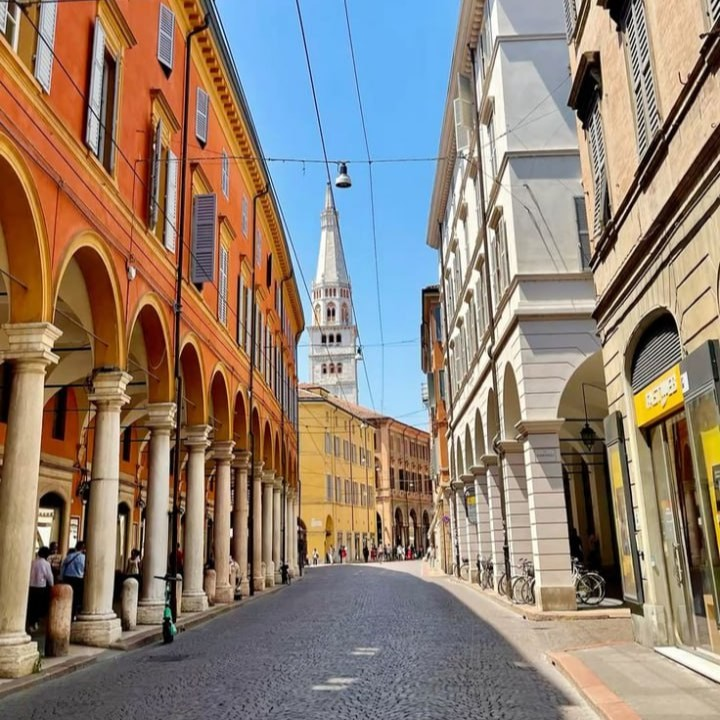
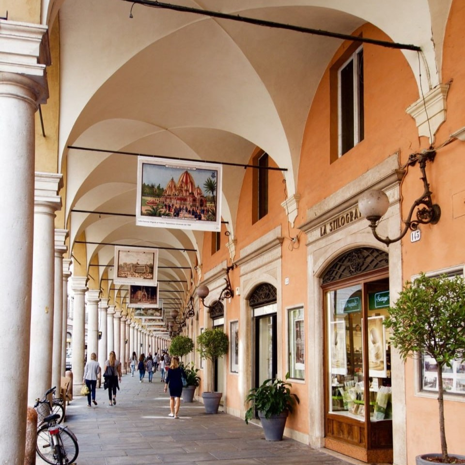
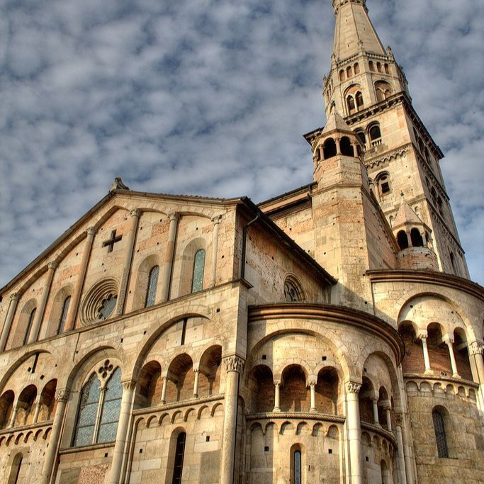
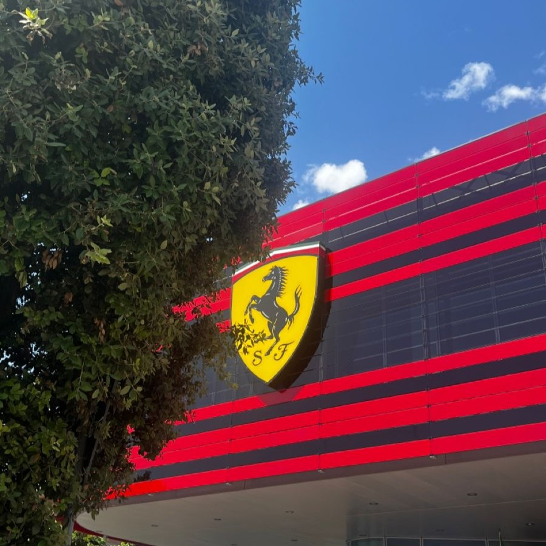
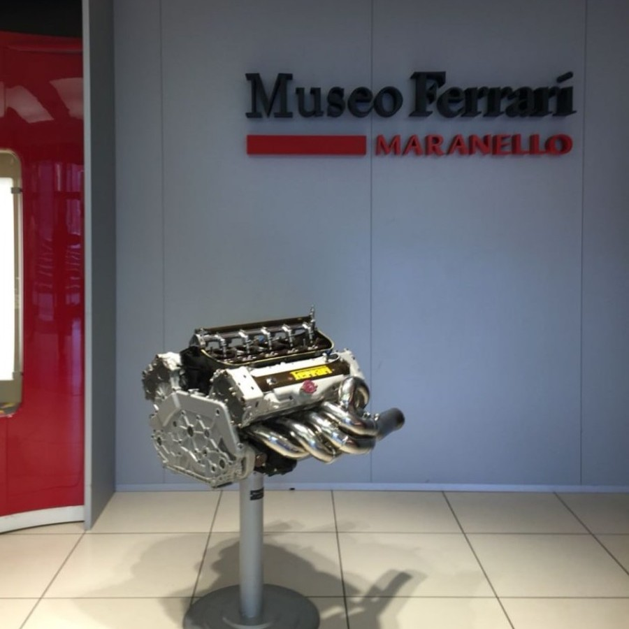

MODENA and MARANELLO
2 Days between Modena and Maranello
Day 1 – Modena
Travel from Turin to Modena
- Departure from Torino Porta Nuova
- Arrival in Modena
- Travel time: about 3 hours (high-speed train)
Morning: Modena city center
- Duomo di Modena: A UNESCO World Heritage site. It is very beautiful and important.
- Torre Ghirlandina: The tower next to the cathedral. You can go up and see the city from the top.
- Piazza Grande: The main square of the city. It is perfect for photos.
Lunch:
Try local food:
- Tortellini
- Lasagna
- Traditional balsamic vinegar
Afternoon:
- Palazzo Ducale di Modena: A very beautiful palace. Today it is a Military Academy (you can see it only from outside).
- Walk around the historic center and go shopping.
- Mercato Albinelli: A covered market with local products.
Evening:
Dinner in the city center and overnight stay in Modena. Try this locals
Day 2 – Maranello (Ferrari)
Morning: Modena to Maranello
Bus from Modena (about 30–40 minutes)
Visit in Maranello
- Museo Ferrari
The most famous Ferrari museum. you can see:
- Formula 1 cars
- Historic cars
- Simulators
- Walk near the Ferrari factory (you cannot go inside).
- Take photos with the Ferrari symbol.
Lanch in Maranello
Return to Turin
- Bus from Maranello to Modena
- Train from Modena to Turin




